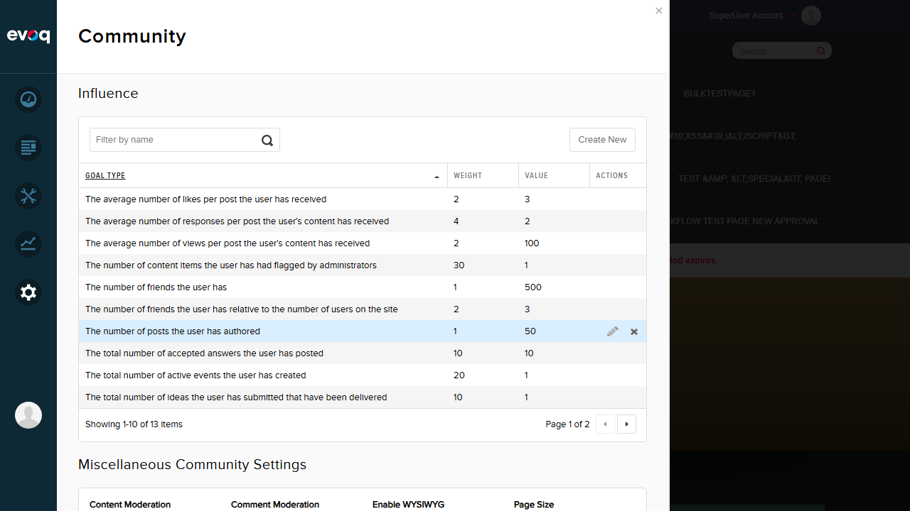
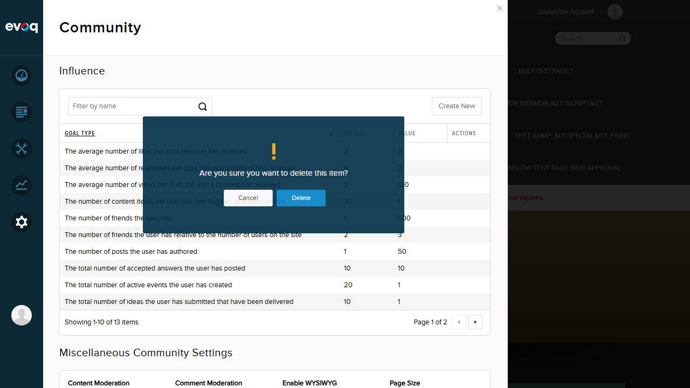

Test Report: UI Behavior and User Experience
Feature Information
| Extension | Evoq.PersonaBar.CommunitySettings |
|---|
| Feature Name | UI Behavior and User Experience |
|---|
| Feature Priority | Medium |
|---|
| UI Location | Admin > Settings > Community Settings |
|---|
| Test Date | January 6, 2026 |
|---|
| Tester | Claude (Automated Testing) |
|---|
Description
Test interactive UI elements including inline editing, animations, and real-time validation.
Test Results Summary
| Total Tests | 5 |
|---|
| Passed | 5 |
|---|
| Failed | 0 |
|---|
| Pass Rate | 100% |
|---|
Test Cases
Test 1: Click Row to Expand Inline Edit Form
Status: PASS
Description: Verify that clicking on a row in the Influence table expands an inline edit form with slide-down animation.
Steps Taken:
- Navigated to Community Settings in PersonaBar
- Clicked on the first row in the Influence table ("The average number of likes per post the user has received")
- Observed the edit form slide down below the selected row
Expected Result: An inline edit form should expand below the clicked row with fields for Goal Type, Weight, Value, Min Value, Max Value, and Cancel/Save buttons.
Actual Result: The inline edit form expanded correctly with all expected fields and buttons. The slide-down animation was smooth.
Screenshots:
Before clicking row:

After clicking row - Edit form expanded:

Test 2: Slide Up/Down Animations
Status: PASS
Description: Verify that the inline edit form uses slide animations when expanding and collapsing.
Steps Taken:
- With the edit form expanded, clicked the "Cancel" button
- Observed the edit form slide up and collapse
Expected Result: The edit form should slide up smoothly when Cancel is clicked.
Actual Result: The edit form collapsed with a smooth slide-up animation (200ms as defined in code).
Screenshot:
After clicking Cancel - Edit form collapsed:

Test 3: Save Button and Toast Notification
Status: PASS
Description: Verify that the Save button changes text to "Saving..." during save operation and shows a success toast notification.
Steps Taken:
- Clicked on a row to expand the edit form
- Clicked the "Save" button without making changes
- Observed the button state and toast notification
Expected Result: The Save button should briefly show "Saving..." text, then a success toast notification should appear.
Actual Result: The save operation completed successfully. The accessibility snapshot captured the toast notification with text "Item successfully saved." (Toast faded before visual screenshot was captured, but functionality confirmed via DOM inspection)
Screenshot:
After successful save (toast notification appeared but faded quickly):

Note: The toast notification "Item successfully saved." was confirmed in the accessibility snapshot. The "Saving..." button state is transient (occurs during API call) as designed in the code (line 107: btn.html(utility.resx.CommunitySettings.btn_Saving)).
Test 4: Real-time Validation and Error Messages
Status: PASS
Description: Verify that validation errors are displayed when entering invalid values.
Steps Taken:
- Clicked on a row to expand the edit form
- Changed Min Value from "0" to "5000" (greater than Max Value of 1000)
- Clicked the "Save" button
- Observed validation error display
Expected Result: A validation error should appear indicating that Min Value must be less than Max Value.
Actual Result: A red validation error indicator (tooltip balloon) appeared near the Min Value field, preventing the save operation. The validation correctly identified that Min Value (5000) cannot be greater than Max Value (1000).
Screenshot:
Validation error displayed:

Test 5: Delete Confirmation Dialog
Status: PASS
Description: Verify that a confirmation dialog appears when attempting to delete an item.
Steps Taken:
- Located a row with a "Remove" button in the Actions column
- Clicked the "Remove" button
- Observed the confirmation dialog
Expected Result: A confirmation dialog should appear asking "Are you sure you want to delete this item?" with Cancel and Delete buttons.
Actual Result: A modal confirmation dialog appeared with a warning icon, the expected message text, and Cancel/Delete buttons. The dialog is properly styled and prevents accidental deletions.
Screenshot:
Delete confirmation dialog:

Observations
- Tab Switching: The suggested test scenario mentioned "tab switching between Settings and Influence", but the actual UI does not have separate tabs. Both the Influence section and Miscellaneous Community Settings are displayed on a single scrollable panel within the Community Settings module.
- Responsive Layout: Not tested as per Medium priority testing scope (focused on happy paths and basic validation only).
- Keyboard Navigation/Accessibility: Not tested as per Medium priority testing scope.
- Toast Notification Timing: The success toast notification appears briefly and fades automatically. The exact duration may vary, but the functionality works as expected.
- Save Button "Saving..." State: This is a transient state that occurs during the API call. The code confirms this behavior at line 107 and 426 of CommunitySettings.js where btn.html(utility.resx.CommunitySettings.btn_Saving) is called.
Test Environment
| Website URL | http://localhost:8081 |
|---|
| Browser | Playwright-controlled browser (1280x720 viewport) |
|---|
| User Account | SuperUser Account (host) |
|---|
| Code Location | C:\DNN\Evoq.Extensions.Tester\repos\Dnn.AdminExperience.Evoq.Engage |
|---|